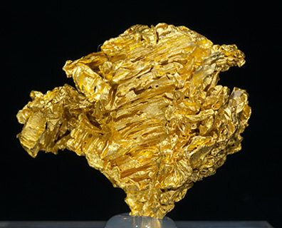
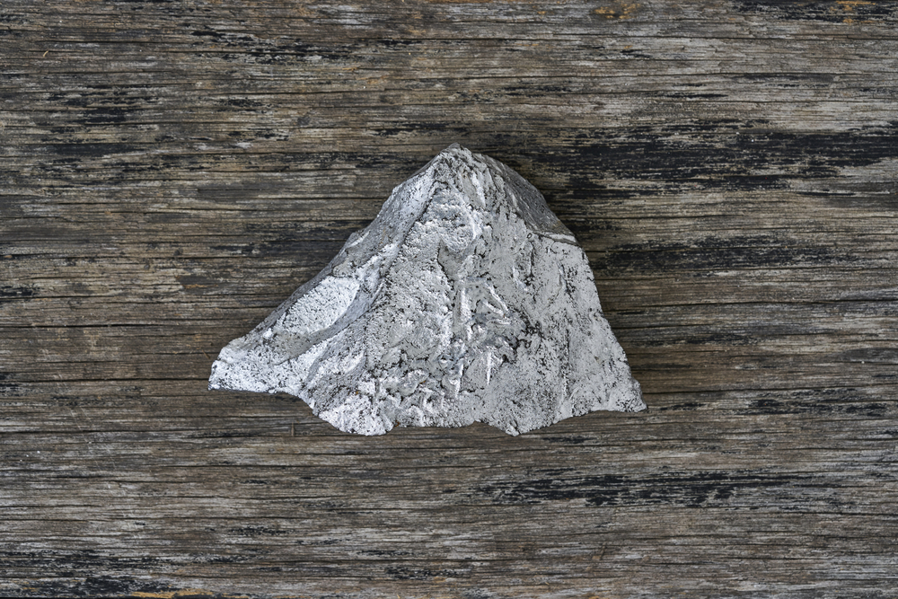
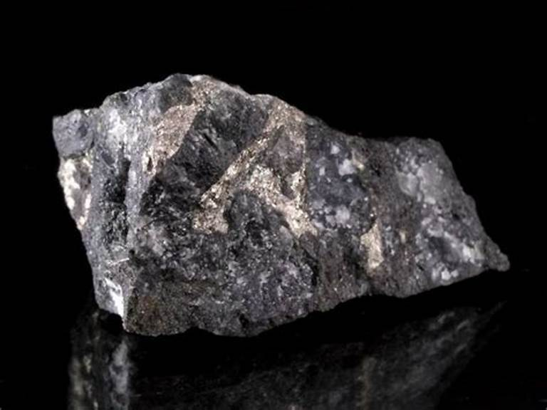
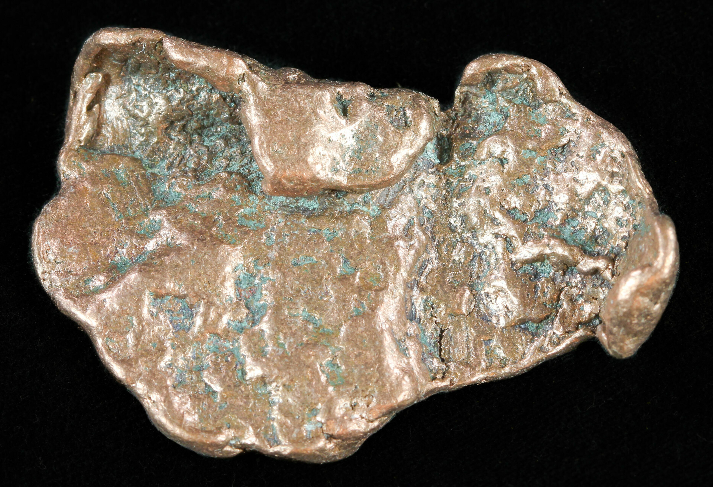

New here?

New to the exciting world of precious metal prospecting? You're in the right place! Our comprehensive guide will equip you with everything you need to know for successful treasure hunting.
Get StartedProspecting Gear & Resources


Gearing up for your precious metal adventure? We've curated a selection of top-quality prospecting tools and resources to ensure your success. From high-performance metal detectors and gold pans to informative guides and maps, we have everything you need to maximize your chances of striking it rich. Click here to discover our selection of prospecting essentials.
Learn MoreAdvertise With Us
Do you own a private dig site or mine teeming with precious metal potential? Attract treasure hunters, and boost your site's visibility by showcasing your unique location to a passionate community of prospectors and rockhounds on Rockhounding.org!
Advertise With Us
Precious Metal Prospecting and Hunting in the United States
The United States boasts a rich history of precious metal discoveries, and even today, it remains a prime destination for prospectors and rockhounds seeking to strike it rich. From the gold-laden rivers of California to the silver veins of Nevada, the allure of finding valuable metals continues to draw adventurers and enthusiasts alike.
Precious Metals Found in the USA
-
Gold (Au):
Gold is one of the most sought-after metals on earth, sought-after for its beauty, rarity, and resistance to corrosion. Across different parts of the world, it has been used for centuries as a form of currency. It's also used in jewelry making and other applications due to its malleability and resistance to tarnish. In the US, it remains one of the most popular precious metals, with an estimated 3,000 metric tons of gold being produced each year. The US is also the world's second-largest consumer of gold, behind only China. The country is home to some of the largest gold mines in the world, including the Carlin Trend in Nevada and the Homestake Mine in South Dakota. A large percentage of the world’s gold supply comes from mines in Nevada and Alaska.
-
Silver (Ag):
Silver is another popular precious metal that has been used for centuries as a form of currency. It's also used in jewelry making and other applications like jewelry, silverware, electronics, photography, and medical applications due to its malleability and resistance to tarnish. In the US, it remains one of the most popular precious metals, with an estimated 1,500 metric tons of silver being produced each year. In the US, silver is mined in Nevada, Alaska, and Idaho. The largest silver mine in the US is the Sunshine Mine in Idaho which has produced over 360 million ounces of silver since it was first discovered in 1884. Other major producers of silver include the Coeur d’Alene Mining District in Idaho and the San Juan Mountains in Colorado.
-
Platinum (Pt):

Platinum is a dense, malleable, and ductile metal that is resistant to corrosion. It has a high melting point and is one of the rarest elements on Earth with an estimated abundance of only 0.005 parts per million (ppm). Platinum is used in jewelry, catalytic converters for automobiles, and as an investment. In the US, platinum is mined in Montana, South Dakota, and Nevada. The largest platinum mine in the US is the Stillwater Complex in Montana, which has produced over 1 million ounces of platinum since it was first discovered in 1974. Other major producers of platinum include the Bushveld Complex in South Africa and the Norilsk-Talnakh region in Russia which together account for about 90% of global production.
-
Palladium (Pd):
Palladium is a rare, silvery-white metal that is used in catalytic converters for automobiles and as an investment. It is also used in the production of fuel cells and other high-tech applications. Palladium is found in the same deposits as platinum and is produced as a byproduct of platinum mining. The largest palladium mine in the US is the Stillwater Complex in Montana, which has produced over 1 million ounces of palladium since it was first discovered in 1974. Other major producers of palladium include the Bushveld Complex in South Africa and the Norilsk-Talnakh region in Russia which together account for about 90% of global production.
-
Copper (Cu):
Copper is a soft, malleable, and ductile metal that has a reddish-orange color. It is one of the most important industrial metals and is used in a wide range of applications including electrical wiring, plumbing and heating systems, roofing materials, and many other products. Copper is also an essential nutrient for humans and animals. The largest copper mine in the US is the Bingham Canyon Mine in Utah which has produced over 18 million tons of copper since it was first discovered in 1863 another popular copper mine in the US is the Morenci mine in Arizona. Other major producers of copper include the Escondida Mine in Chile and the Grasberg Mine in Indonesia which together account for about 50% of global production.
Common Prospecting Sites in the United States
The United States boasts a rich history of precious metal mining and prospecting, dating back to the California Gold Rush of 1848. While large-scale commercial mining operations dominate the industry today, numerous sites remain popular among recreational prospectors and small-scale miners.
Here are some of the most common prospecting sites in the US, along with their historical and geological significance:
1. California
Famous for its gold rush history, California remains a hotbed for gold prospecting. The California Gold Rush transformed the state and the nation, drawing hundreds of thousands of prospectors seeking fortunes in the Sierra Nevada foothills and along the American River. Though the boom years are long gone, gold can still be found in many areas. The state is also home to several other precious metals, including silver and copper.
Sites: The Mother Lode region, including towns like Jamestown, Sonora, and Nevada City, is a popular destination for gold panning and sluicing. The Klamath River and its tributaries also offer opportunities for gold prospecting.
Geology: California's gold deposits are primarily associated with quartz veins formed during the Jurassic period. Erosion of these veins over millions of years has deposited gold in riverbeds and alluvial deposits.
2. Alaska
Alaska is home to some of the world's largest gold deposits. The state has been a major producer of the precious metal since the late 1800s when it was discovered in the Klondike region. Gold was discovered in Alaska in the late 19th century, leading to several gold rushes and the establishment of mining towns like Nome and Fairbanks. Today, Alaska remains a significant gold producer and there are still many active mines in Alaska that produce gold and other minerals.
Sites: Nome is one of the most popular places for gold prospecting in Alaska, particularly the beaches and rivers around Nome, are famous for gold panning. The Fairbanks area, particularly the Chatanika River and its tributaries, also offers opportunities for gold prospecting. Another popular destination is Anchorage.
Geology: Alaska's gold deposits are varied, ranging from placer deposits in riverbeds to lode deposits in quartz veins. Erosion of these veins over millions of years has deposited gold in riverbeds and alluvial deposits. The state's glaciation history has played a role in redistributing gold and creating new placer deposits.
3. Nevada
Nevada's mining history is closely tied to the Comstock Lode, a massive silver deposit discovered in 1859. While the Comstock Lode is largely depleted, Nevada remains a major producer of gold and silver.
Sites: Public lands managed by the Bureau of Land Management (BLM) in Nevada offer numerous opportunities for prospecting. Areas around old mining districts, such as Tonopah, Goldfield, and Virginia City, are worth exploring.
Geology: Nevada's gold and silver deposits are mainly associated with epithermal systems, formed by hot fluids circulating through volcanic rocks.
4. Colorado
Colorado is another state with a rich mining history. The state's gold rush began in 1859 when prospectors discovered placer deposits in the South Platte River near Denver. Colorado experienced several gold rushes in the 19th century, leading to the establishment of mining towns like Cripple Creek and Leadville. By 1861, more than 100,000 people had flocked to Colorado to seek their fortunes. Today, Colorado is still a major producer of gold and silver.
Sites: Public lands managed by the BLM in Colorado offer numerous opportunities for prospecting. The Arkansas River and its tributaries are popular for gold panning. Areas around old mining districts, such as Cripple Creek and Victor, are worth exploring.
Geology: Colorado's gold and silver deposits are mainly associated with epithermal systems, formed by hot fluids circulating through volcanic rocks. Colorado's gold deposits are also found in riverbeds to lode deposits in metamorphic and igneous rocks.
5. Arizona
Arizona is another state that has a rich history of gold mining. The state's first gold rush occurred in 1863 when prospectors found gold in the Gila River. Today, Arizona is still a major producer of gold and silver. Arizona also has a long history of copper mining. The area around Tombstone is famous for its silver mining history.
Sites: Public lands managed by the BLM in Arizona offer numerous opportunities for prospecting, particularly around old mining districts such as Tombstone and Bisbee, can be productive for gold prospecting. The Lynx Creek district and the Bradshaw Mountains are popular areas. The San Pedro River and its tributaries are popular for gold panning.
Geology: Arizona's gold and silver deposits are mainly associated with epithermal systems, formed by hot fluids circulating through volcanic rocks. They are also associated with porphyry copper systems, formed by large magma intrusions. Arizona's gold deposits are also found in riverbeds to lode deposits in metamorphic and igneous rocks.
6. North Carolina
North Carolina is home to some of the oldest gold mines in the United States. The Reed Gold Mine, located in Cabarrus County, is one of the most famous. It was discovered by John Reed in 1799 and produced over 1 million ounces of gold before it closed in 1912. The mine is now a state historic site and open to the public for tours. Other notable mines include the Haile Mine in Lancaster County and the Carolina Slate Belt Gold District in Mecklenburg County.
Sites: The Reed Gold Mine is located in Cabarrus County, North Carolina. It was discovered by John Reed in 1799 and produced over 1 million ounces of gold before it closed in 1912. The mine is now a state historic site and open to the public for tours. Other notable mines include the Haile Mine in Lancaster County and the Carolina Slate Belt Gold District in Mecklenburg County.
Geology: North Carolina's gold deposits are mainly associated with metamorphic rocks, such as gneiss and schist. They are also found in quartz veins and placer deposits.
7. Montana
Montana boasts of some of the largest gold deposits in the United States. The state has produced over 50 million ounces of gold since 1862, when it was first discovered by prospectors. Montana's gold mines are mainly located in the western part of the state, near the Idaho border.
Sites: The most famous mine in Montana is the Homestake Mine, which was discovered in 1876 and produced over 40 million ounces of gold before it closed in 2002. Other notable mines include the Golden Sunlight Mine in Jefferson County and the Golden Messenger Mine in Silver Bow County. The Bannack State Park is a former mining town that is now a state park. It was the site of Montana's first major gold discovery in 1862 and produced over 2 million ounces of gold before it closed in 1938. Other notable mines include the Zortman-Landusky Mine in Phillips County and the Butte District in Silver Bow County.
Geology: Montana's gold deposits are mainly associated with metamorphic rocks, such as gneiss and schist. They are also found in quartz veins and placer deposits.
Tips for Successful Precious Metal Hunting in the U.S.
1. Research and Education
- Learn about geology: Understand the geological formations and types of deposits where precious metals are likely to be found in your target area.
- Research mining history: Study historical mining records and maps to identify old mining districts and potential hotspots.
- Understand regulations: Familiarize yourself with federal, state, and local laws regarding prospecting and mining claims.
- Join clubs and organizations: Connect with experienced prospectors to learn from their expertise and share knowledge.
2. Planning and Preparation
- Choose a location: Select a prospecting site based on your research and geological knowledge. Consider factors like accessibility, terrain, and weather conditions.
- Obtain necessary permits: If required, secure permits or permissions before prospecting on public or private lands.
- Gather equipment: Invest in essential prospecting tools like a gold pan, sluice box, metal detector, shovel, pickaxe, and safety gear.
- Prepare for the elements: Pack appropriate clothing, food, water, and first-aid supplies for the conditions you'll encounter.
3. Prospecting Techniques
- Panning: This traditional method involves swirling water in a pan to separate heavier gold from lighter materials.
- Sluicing: A sluice box uses water flow and riffles to trap gold and other heavy minerals.
- Metal detecting: This technology helps locate buried metal objects, including gold nuggets.
- Drywashing: This method is used in arid regions to separate gold from dry materials using air instead of water.
4. Safety Precautions
- Be aware of hazards: Watch out for unstable ground, swift water, wildlife, and other potential dangers.
- Practice safe digging: Use caution when excavating to avoid cave-ins and injuries.
- Carry communication devices: Have a cell phone or satellite phone for emergencies.
- Tell someone your plans: Inform someone about your prospecting location and estimated return time.
5. Environmental Responsibility
- Minimize impact: Practice Leave No Trace principles to protect natural resources and avoid disturbing the environment.
- Fill in holes: Refill any holes you dig and restore the land to its original condition.
- Properly dispose of waste: Pack out all trash and dispose of it properly.
Additional Tips
- Start small: Begin with simple techniques like panning and gradually progress to more advanced methods.
- Network with others: Share knowledge and experiences with fellow prospectors to learn and improve.
- Be patient and persistent: Prospecting requires time and effort, so don't get discouraged if you don't strike gold right away.
- Respect private property: Always obtain permission before prospecting on private land.
- Keep a journal: Record your findings, observations, and experiences to track your progress and learn from your mistakes.
By following these tips and approaching prospecting with a combination of knowledge, preparation, and ethical practices, you can increase your chances of success and enjoy a rewarding experience while exploring the natural beauty of the United States.
Tools of the Trade
Before you head out to hunt for precious metals, it's important to have the right tools. This includes a metal detector, a shovel or pick, a classifier, and more. The type of gear you need may vary depending on the area you're searching and the type of metal you're after. Click the link to see our recommended tools for prospecting.
Methods of Prospecting
There are many different methods for prospecting for precious metals, including panning, sluicing, dredging, and more. Each method has its own advantages and challenges, so it's important to choose the one that best suits your needs and experience level.
Panning
Panning is one of the oldest and simplest methods of prospecting for gold. It involves using a pan to separate gold from gravel or sand by swirling the mixture around in water. The heavier gold particles will sink to the bottom of the pan, while lighter material will wash away. Panning can be done in almost any body of water, from rivers to streams to lakes.
Sluicing

Sluicing is a method of prospecting that uses a long, narrow trough called a sluice box to channel water and separate gold from other materials. As water runs through the sluice box, riffles catch the heavier gold particles and allow lighter material to wash away. Sluicing is typically done in areas with flowing water and can be a very efficient way to recover gold.
Dredging

Dredging is a method of prospecting that involves using a suction hose to extract gold from river bottoms or stream beds. A dredge is essentially a vacuum cleaner that sucks up material from the river or stream bed and separates the gold using a sluice box or other method. Dredging can be an effective way to recover large quantities of gold, but it can also be expensive and environmentally damaging if not done responsibly.
Metal Detecting
Metal detecting is a method of prospecting that uses a handheld device to detect metal buried underground. This method can be effective for finding gold nuggets or other metal deposits that are hidden beneath the surface. Metal detecting can be done in a variety of locations, including deserts, mountains, and even urban areas. However, it can also be time-consuming and require a lot of patience.
Modern Metal Hunting
Finding precious metals in their natural state can be extremely rewarding and fun. However, that is not the only way to find precious metals. Due to the explosion of technology over the last few decades, and the rampant consumer culture, people throw away precious metals literally every day. You can find (and extract) precious metals from electronics, wires, and all sorts of other places if you know how to look.
Finding Gemstones
While precious metals are the main attraction for many prospectors, there are also plenty of beautiful gemstones waiting to be found. Some popular gems include amethyst, garnet, and sapphire. Click the link to learn more about where to find these gemstones and how to identify them.